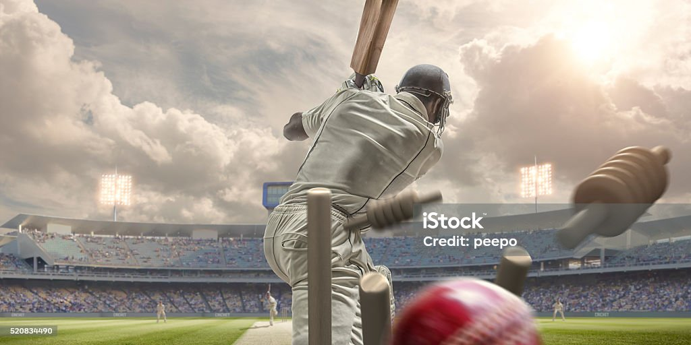

Cricket World Cup 2023
Maxwell Did Double Century
The all-rounder came to the crease with his side 49-4, which soon became 91-7, in pursuit of 292 to seal a semi-final spot.
Maxwell's innings, the highest men's one-day international score by an Australia batter, was all the more remarkable given he battled cramp and back spasms throughout.
He joined Kate Cross and Alex Hartley on No Balls: The Cricket Podcast to talk through his astonishing knock.

| Countries |
WOrld cup |
Runners up |
third |
| India |
5 |
5 |
4 |
| Bangladesh |
0 |
0 |
0 |
| Pakistan |
0 |
0 |
0 |